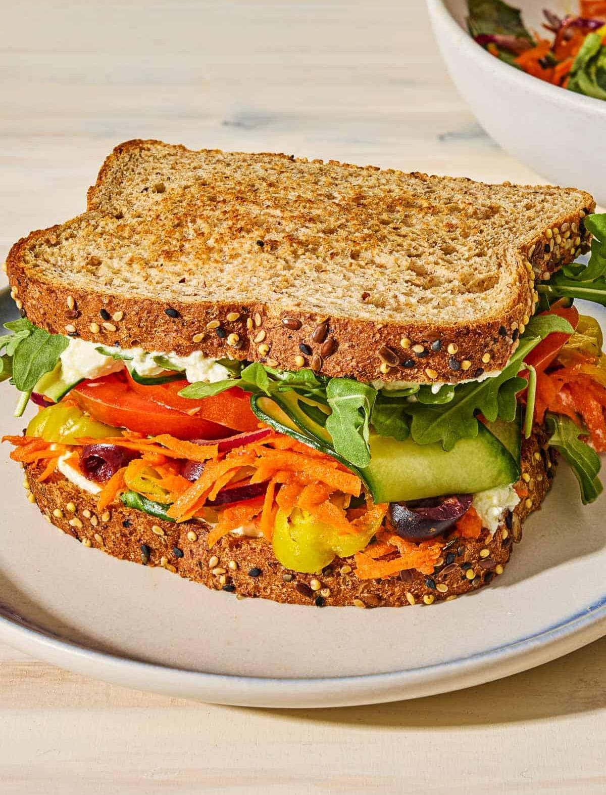

Vegetable Sandwich
⭐⭐⭐⭐⭐ 4.8 Rating | ⏱ 15 Minutes | 🍽 2 Servings
Category
Breakfast / Snack
Difficulty
Easy
Calories
290 kcal
Cooking Style
Toasted / Grilled
📋 Ingredients
- 4 Bread Slices
- 2 tbsp Butter
- 2 tbsp Green Chutney or Mayonnaise
- 1 Small Tomato (Sliced)
- 1 Small Cucumber (Sliced)
- 1 Small Onion (Sliced)
- 1 Boiled Potato (Sliced)
- 2 Cheese Slices (Optional)
- Black Pepper Powder
- Salt to Taste
- Butter for Toasting
🍳 Required Utensils
- Knife
- Cutting Board
- Sandwich Griller or Pan
- Spatula
- Serving Plate
📖 Introduction
Vegetable Sandwich is a quick and healthy snack made with fresh vegetables, butter, and bread. It is perfect for breakfast, evening snacks, or lunch boxes.
🔬 Principle
Fresh vegetables are layered between bread slices with butter or chutney. Toasting the sandwich makes the bread crispy while keeping the vegetables fresh and flavorful.
👨🍳 Procedure
- Wash and slice all vegetables.
- Apply butter on all bread slices.
- Spread green chutney or mayonnaise.
- Place potato slices on one bread slice.
- Add onion, cucumber, and tomato slices.
- Sprinkle salt and black pepper.
- Add a cheese slice if desired.
- Cover with another bread slice.
- Toast in a sandwich griller for 4–5 minutes.
- Or roast on a pan until golden brown on both sides.
- Cut the sandwich diagonally.
- Serve hot with tomato ketchup.
⚠ Precautions
- Use fresh vegetables.
- Do not overfill the sandwich.
- Toast on medium heat.
- Spread butter evenly.
- Serve immediately after toasting.
💡 Chef Tips
- Add paneer or tofu for extra protein.
- Use whole wheat bread for a healthier option.
- Add sweet corn or olives for extra flavor.
- Sprinkle oregano and chilli flakes.
- Serve with mint chutney.
🥗 Nutrition Facts
| Nutrient | Amount |
|---|---|
| Calories | 290 kcal |
| Protein | 9 g |
| Carbohydrates | 32 g |
| Fat | 12 g |
| Fiber | 5 g |
🍽 Serving Suggestions
- Serve with tomato ketchup.
- Enjoy with green chutney.
- Pair with tea or coffee.
- Serve with fresh fruit juice.
- Enjoy with French fries.
🌿 Health Benefits
- Vegetables provide vitamins and minerals.
- Whole wheat bread supplies fiber.
- Cheese provides calcium and protein.
- Quick source of energy.
- Healthy homemade snack.
✅ Result
The prepared Vegetable Sandwich should have crispy golden bread with fresh, colorful vegetables inside. It should be flavorful, crunchy, and served hot with tomato ketchup or green chutney.
🎥 Watch Recipe Video
Learn the complete recipe by watching the step-by-step video.
▶ Watch on YouTube